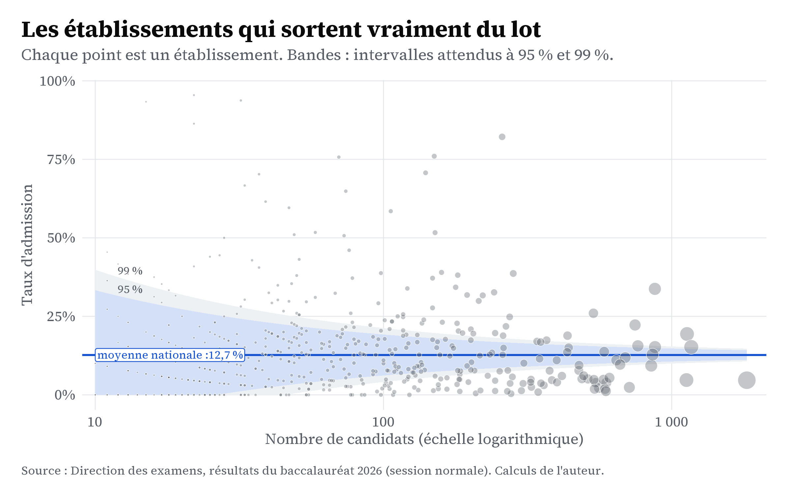

| Les douze établissements les mieux classés | ||||
| Parmi ceux ayant présenté au moins 30 candidats (session normale 2026) | ||||
| Établissement | Wilaya | Candidats | Taux d'admission | Moyenne |
|---|---|---|---|---|
| Institut Chinguetti | Adrar | 32 | 93,8% | 10,92 |
| Lycée Excellence 1 KSAR | Nouakchott Ouest | 258 | 82,2% | 12,17 |
| Lycée Excellence 2 | Nouakchott Sud | 150 | 76,0% | 11,30 |
| Lycée Excellence Nouadhibou | Dakhlet NDB | 70 | 75,7% | 11,50 |
| Lycée Excellence 3 | Nouakchott Nord | 140 | 70,7% | 10,94 |
| Lycée Excellence 4 TZN | Nouakchott Ouest | 37 | 70,3% | 10,45 |
| E E T F P de Zoueirat | Tiris Zemour | 33 | 66,7% | 9,82 |
| Menab El Ouloum TZN | Nouakchott Ouest | 74 | 64,9% | 10,10 |
| Groupe Scolaire Waghif Maarif | Nouakchott Ouest | 39 | 61,5% | 10,03 |
| EZZEMANE | Nouakchott Ouest | 47 | 59,6% | 9,55 |
| SABLETTES T.ZN | Nouakchott Ouest | 106 | 58,5% | 9,97 |
| Sebil Amourj | Hod Charghy | 58 | 51,7% | 8,86 |
| Source : Direction des examens. Calculs de l’auteur. | ||||
Le classement des établissements
C’est au niveau des établissements que les écarts sont les plus grands. Mais c’est aussi là qu’il est le plus facile de se tromper.
Quand on parle du « meilleur lycée du pays », il s’agit presque toujours d’un tout petit établissement où quelques candidats bien choisis ont tous réussi. À l’inverse, les grands lycées, avec des centaines d’élèves de niveaux variés, ne peuvent pas afficher d’aussi beaux taux. Comparer les établissements sans tenir compte de leur taille, c’est confondre la chance et le vrai niveau. Cette page essaie de faire la comparaison correctement.
Le classement brut
Commençons par le classement simple, pour ensuite en montrer les limites. Voici les établissements les mieux classés parmi ceux qui ont présenté au moins trente candidats. Ce seuil écarte déjà les établissements trop petits pour qu’un taux ait un sens.
Ces chiffres sont impressionnants. Mais une question se pose : un établissement avec un taux très élevé sur trente candidats est-il vraiment meilleur qu’un autre, un peu en dessous, mais sur trois cents ? Pas forcément. Avec un petit nombre de candidats, le taux est instable : quelques copies suffisent à le faire changer beaucoup.
Le graphique en entonnoir
L’outil adapté s’appelle le graphique en entonnoir (funnel plot). Chaque établissement y est placé selon sa taille (en abscisse) et son taux d’admission (en ordonnée). Les deux courbes montrent l’intervalle dans lequel un établissement « normal » devrait se trouver, autour de la moyenne nationale, si seul le hasard jouait. Un établissement qui sort de l’entonnoir se distingue vraiment.

La forme en entonnoir est très parlante. À gauche, les petits établissements sont très dispersés : certains ont des taux très élevés, d’autres très bas, mais ces écarts sont surtout dus au hasard. À droite, les grands établissements sont regroupés autour de la moyenne : leur taux, calculé sur des centaines de candidats, est fiable. Les points qui dépassent la bande du haut tout en ayant beaucoup de candidats sont les seuls dont on peut vraiment dire qu’ils réussissent mieux que la moyenne.
Les établissements vraiment au-dessus de la moyenne
En combinant deux conditions (un nombre suffisant de candidats et une borne basse de l’intervalle de confiance au-dessus de la moyenne nationale), on obtient une liste plus courte mais bien plus fiable : celle des établissements dont la réussite résiste au doute statistique.
| Les établissements les plus solides | ||||
| Au moins 50 candidats et borne basse de l'IC 95 % au-dessus de la moyenne nationale | ||||
| Établissement | Wilaya | Candidats | Taux | IC 95 % (bas) |
|---|---|---|---|---|
| Lycée Excellence 1 KSAR | Nouakchott Ouest | 258 | 82,2% | 77,0% |
| Lycée Excellence 2 | Nouakchott Sud | 150 | 76,0% | 68,6% |
| Lycée Excellence Nouadhibou | Dakhlet NDB | 70 | 75,7% | 64,5% |
| Lycée Excellence 3 | Nouakchott Nord | 140 | 70,7% | 62,7% |
| Menab El Ouloum TZN | Nouakchott Ouest | 74 | 64,9% | 53,5% |
| SABLETTES T.ZN | Nouakchott Ouest | 106 | 58,5% | 49,0% |
| Sebil Amourj | Hod Charghy | 58 | 51,7% | 39,2% |
| ECOLES NOUJOUM TZN | Nouakchott Ouest | 151 | 51,7% | 43,7% |
| EteEhil | Inchiri | 73 | 50,7% | 39,5% |
| El Velagh TEY | Nouakchott Nord | 76 | 46,1% | 35,3% |
| Sebil Timbédra | Hod Charghy | 51 | 43,1% | 30,5% |
| Maleck -Tintane | Hod Gharby | 159 | 39,0% | 31,8% |
| Source : Direction des examens. Calculs de l’auteur. | ||||
Cette seconde liste est le vrai classement. Elle est plus courte que la première, sans les résultats dus au hasard, et elle mélange souvent des établissements moyens et quelques grands lycées. C’est là, et non dans les taux bruts, qu’il faut chercher les établissements qui réussissent durablement, ceux dont on gagnerait à étudier l’exemple de près.